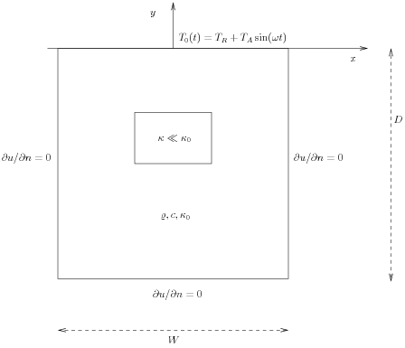

The examples in the section Fundamentals illustrate that solving linear, stationary PDE problems with the aid of FEniCS is easy and requires little programming. That is, FEniCS automates the spatial discretization by the finite element method. The solution of nonlinear problems, as we showed in the section Nonlinear problems, can also be automated (cf. the section Solving the nonlinear variational problem directly), but many scientists will prefer to code the solution strategy of the nonlinear problem themselves and experiment with various combinations of strategies in difficult problems. Time-dependent problems are somewhat similar in this respect: we have to add a time discretization scheme, which is often quite simple, making it natural to explicitly code the details of the scheme so that the programmer has full control. We shall explain how easily this is accomplished through examples.
Our time-dependent model problem for teaching purposes is naturally the simplest extension of the Poisson problem into the time domain, i.e., the diffusion problem $$ \begin{align} {\partial u\over\partial t} &= \nabla^2 u + f \mbox{ in } \Omega, \hbox{ for } t>0, \tag{40}\\ u &= u_0 \mbox{ on } \partial \Omega,\hbox{ for } t>0, \tag{41}\\ u &= I \mbox{ at } t=0\tp \tag{42} \end{align} $$ Here, \( u \) varies with space and time, e.g., \( u=u(x,y,t) \) if the spatial domain \( \Omega \) is two-dimensional. The source function \( f \) and the boundary values \( u_0 \) may also vary with space and time. The initial condition \( I \) is a function of space only.
A straightforward approach to solving time-dependent PDEs by the finite element method is to first discretize the time derivative by a finite difference approximation, which yields a recursive set of stationary problems, and then turn each stationary problem into a variational formulation.
Let superscript \( k \) denote a quantity at time \( t_k \), where \( k \) is an integer counting time levels. For example, \( u^k \) means \( u \) at time level \( k \). A finite difference discretization in time first consists in sampling the PDE at some time level, say \( k \): $$ \begin{equation} {\partial \over\partial t}u^k = \nabla^2 u^k + f^k\tp \tag{43} \end{equation} $$ The time-derivative can be approximated by a finite difference. For simplicity and stability reasons we choose a simple backward difference: $$ \begin{equation} {\partial \over\partial t}u^k\approx {u^k - u^{k-1}\over{\dt}}, \tag{44} \end{equation} $$ where \( \dt \) is the time discretization parameter. Inserting (44) in (43) yields $$ \begin{equation} {u^k - u^{k-1}\over{\dt}} = \nabla^2 u^k + f^k\tp \tag{45} \end{equation} $$ This is our time-discrete version of the diffusion PDE (40). Reordering (45) so that \( u^k \) appears on the left-hand side only, shows that (45) is a recursive set of spatial (stationary) problems for \( u^k \) (assuming \( u^{k-1} \) is known from computations at the previous time level): $$ \begin{align} u^0 &= I, \tag{46}\\ u^k - {\dt}\nabla^2 u^k &= u^{k-1} + {\dt} f^k,\quad k=1,2,\ldots \tag{47} \end{align} $$ Given \( I \), we can solve for \( u^0 \), \( u^1 \), \( u^2 \), and so on.
We use a finite element method to solve the equations (46) and (47). This requires turning the equations into weak forms. As usual, we multiply by a test function \( v\in \hat V \) and integrate second-derivatives by parts. Introducing the symbol \( u \) for \( u^k \) (which is natural in the program too), the resulting weak form can be conveniently written in the standard notation: \( a_0(u,v)=L_0(v) \) for (46) and \( a(u,v)=L(v) \) for (47), where $$ \begin{align} a_0(u,v) &= \int_\Omega uv \dx, \tag{48}\\ L_0(v) &= \int_\Omega Iv \dx, \tag{49}\\ a(u,v) &= \int_\Omega\left( uv + {\dt} \nabla u\cdot \nabla v\right) \dx, \tag{50}\\ L(v) &= \int_\Omega \left(u^{k-1} + {\dt} f^k\right)v \dx\tp \tag{51} \end{align} $$ The continuous variational problem is to find \( u^0\in V \) such that \( a_0(u^0,v)=L_0(v) \) holds for all \( v\in\hat V \), and then find \( u^k\in V \) such that \( a(u^k,v)=L(v) \) for all \( v\in\hat V \), \( k=1,2,\ldots \).
Approximate solutions in space are found by restricting the functional spaces \( V \) and \( \hat V \) to finite-dimensional spaces, exactly as we have done in the Poisson problems. We shall use the symbol \( u \) for the finite element approximation at time \( t_k \). In case we need to distinguish this space-time discrete approximation from the exact solution of the continuous diffusion problem, we use \( \uex \) for the latter. By \( u^{k-1} \) we mean, from now on, the finite element approximation of the solution at time \( t_{k-1} \).
Note that the forms \( a_0 \) and \( L_0 \) are identical to the forms
met in the section Computing derivatives, except that the test and trial
functions are now
scalar fields and not vector fields.
Instead of solving
(46)
by a finite
element method, i.e., projecting \( I \) onto \( V \) via
the problem \( a_0(u,v)=L_0(v) \), we could simply interpolate \( u^0 \) from
\( I \). That is, if \( u^0=\sum_{j=1}^N U^0_j\phi_j \), we
simply set \( U_j=I(x_j,y_j) \), where \( (x_j,y_j) \) are the coordinates of
node number \( j \). We refer to these two strategies as computing
the initial condition by either projecting \( I \) or interpolating \( I \).
Both operations are easy to compute through one statement, using either
the project or interpolate function.
Our program needs to perform the time stepping explicitly, but can rely on FEniCS to easily compute \( a_0 \), \( L_0 \), \( a \), and \( L \), and solve the linear systems for the unknowns. We realize that \( a \) does not depend on time, which means that its associated matrix also will be time independent. Therefore, it is wise to explicitly create matrices and vectors as in the section A linear algebra formulation. The matrix \( A \) arising from \( a \) can be computed prior to the time stepping, so that we only need to compute the right-hand side \( b \), corresponding to \( L \), in each pass in the time loop. Let us express the solution procedure in algorithmic form, writing \( u \) for the unknown spatial function at the new time level (\( u^k \)) and \( u_1 \) for the spatial solution at one earlier time level (\( u^{k-1} \)):
A new programming issue is how to deal with functions that vary in
space and time, such as the boundary condition
\( u_0 \) given by (52).
A natural solution is
to apply an Expression object with time \( t \) as a parameter,
in addition to the parameters \( \alpha \) and \( \beta \) (see
the section Solving a real physical problem for Expression
objects with parameters):
alpha = 3; beta = 1.2
u0 = Expression('1 + x[0]*x[0] + alpha*x[1]*x[1] + beta*t',
alpha=alpha, beta=beta, t=0)
The time parameter can later be updated by assigning values to u0.t.
Given a mesh and an associated function space V, we
can specify the \( u_0 \) function as
alpha = 3; beta = 1.2
u0 = Expression('1 + x[0]*x[0] + alpha*x[1]*x[1] + beta*t',
{'alpha': alpha, 'beta': beta})
u0.t = 0
This function expression has the components of x as independent
variables, while alpha, beta, and t are parameters.
The parameters can either be set through a dictionary at construction time,
as demonstrated for alpha and beta, or anytime through
attributes in the function
object, as shown for the t parameter.
The essential boundary conditions, along the whole boundary in this case, are set in the usual way,
def boundary(x, on_boundary): # define the Dirichlet boundary
return on_boundary
bc = DirichletBC(V, u0, boundary)
We shall use u for the unknown \( u \) at the new time level and
u_1 for \( u \) at the previous time level. The initial value of
u_1, implied by the initial condition on \( u \), can be computed
by either projecting or interpolating \( I \).
The \( I(x,y) \) function is available in the program through
u0,
as long as u0.t is zero.
We can then do
u_1 = interpolate(u0, V)
# or
u_1 = project(u0, V)
Note that we could, as an equivalent alternative to using project, define
\( a_0 \) and \( L_0 \) as we did in the section Computing derivatives and form
the associated variational problem.
To actually recover the exact solution
(52)
to machine precision,
it is important not to compute the discrete initial condition by
projecting \( I \), but by interpolating \( I \) so that the nodal values are
exact at \( t=0 \) (projection results in approximative values at the nodes).
The definition of \( a \) and \( L \) goes as follows:
dt = 0.3 # time step
u = TrialFunction(V)
v = TestFunction(V)
f = Constant(beta - 2 - 2*alpha)
a = u*v*dx + dt*inner(nabla_grad(u), nabla_grad(v))*dx
L = (u_1 + dt*f)*v*dx
A = assemble(a) # assemble only once, before the time stepping
Finally, we perform the time stepping in a loop:
u = Function(V) # the unknown at a new time level
T = 2 # total simulation time
t = dt
while t <= T:
b = assemble(L)
u0.t = t
bc.apply(A, b)
solve(A, u.vector(), b)
t += dt
u_1.assign(u)
Observe that u0.t must be updated before the bc.apply
statement, to enforce computation of Dirichlet conditions at the
current time level.
The time loop above does not contain any comparison of the numerical
and the exact solution, which we must include in order to verify the
implementation. As in many previous examples, we compute the
difference between the array of nodal values of u and the array of
the interpolated exact solution. The following code is to be included
inside the loop, after u is found:
u_e = interpolate(u0, V)
maxdiff = numpy.abs(u_e.vector().array()-u.vector().array()).max()
print('Max error, t=%.2f: %-10.3f' % (t, maxdiff))
The right-hand side vector b must obviously
be recomputed at each time level.
With the construction b = assemble(L), a new
vector for b is allocated in memory in every pass of the time loop.
It would be much more memory friendly to reuse the storage of the b
we already have.
This is easily accomplished by
b = assemble(L, tensor=b)
That is, we send in our previous b, which is then filled with new values
and returned from assemble. Now there will be only a single
memory allocation of the right-hand side vector. Before the time loop
we set b = None such that b is defined in the first call to
assemble.
The complete program code for this time-dependent case goes as follows:
from dolfin import *
import numpy
# Create mesh and define function space
nx = ny = 2
mesh = UnitSquareMesh(nx, ny)
V = FunctionSpace(mesh, 'Lagrange', 1)
# Define boundary conditions
alpha = 3; beta = 1.2
u0 = Expression('1 + x[0]*x[0] + alpha*x[1]*x[1] + beta*t',
alpha=alpha, beta=beta, t=0)
class Boundary(SubDomain): # define the Dirichlet boundary
def inside(self, x, on_boundary):
return on_boundary
boundary = Boundary()
bc = DirichletBC(V, u0, boundary)
# Initial condition
u_1 = interpolate(u0, V)
#u_1 = project(u0, V) # will not result in exact solution!
dt = 0.3 # time step
# Define variational problem
u = TrialFunction(V)
v = TestFunction(V)
f = Constant(beta - 2 - 2*alpha)
a = u*v*dx + dt*inner(nabla_grad(u), nabla_grad(v))*dx
L = (u_1 + dt*f)*v*dx
A = assemble(a) # assemble only once, before the time stepping
b = None # necessary for memory saving assemeble call
# Compute solution
u = Function(V) # the unknown at a new time level
T = 1.9 # total simulation time
t = dt
while t <= T:
print('time =', t)
b = assemble(L, tensor=b)
u0.t = t
bc.apply(A, b)
solve(A, u.vector(), b)
# Verify
u_e = interpolate(u0, V)
maxdiff = numpy.abs(u_e.vector().array() - u.vector().array()).max()
print('Max error, t=%.2f: %-10.3f' % (t, maxdiff))
t += dt
u_1.assign(u)
The code is available in the file d1_d2D.py in the directory transient/diffusion.
The purpose of this section is to present a technique for speeding
up FEniCS simulators for time-dependent problems where it is
possible to perform all assembly operations prior to the time loop.
There are two costly operations in the time loop: assembly of the
right-hand side \( b \) and solution of the linear system via the
solve call. The assembly process involves work proportional to
the number of degrees of freedom \( N \), while the solve operation
has a work estimate of \( \mathcal{O}( N^{\alpha}) \), for some \( \alpha\geq 1 \). As
\( N\rightarrow\infty \), the solve operation will dominate for \( \alpha>1 \),
but for the values of \( N \) typically used on smaller computers, the
assembly step may still
represent a considerable part of the total work at each
time level. Avoiding repeated assembly can therefore contribute to a
significant speed-up of a finite element code in time-dependent problems.
To see how repeated assembly can be avoided, we look at the \( L(v) \) form in (51), which in general varies with time through \( u^{k-1} \), \( f^k \), and possibly also with \( \dt \) if the time step is adjusted during the simulation. The technique for avoiding repeated assembly consists in expanding the finite element functions in sums over the basis functions \( \phi_i \), as explained in the section A linear algebra formulation, to identify matrix-vector products that build up the complete system. We have \( u^{k-1}=\sum_{j=1}^NU^{k-1}_j\phi_j \), and we can expand \( f^k \) as \( f^{k}=\sum_{j=1}^NF^{k}_j\phi_j \). Inserting these expressions in \( L(v) \) and using \( v=\hat\phi_i \) result in $$ \begin{align*} \int_\Omega \left(u^{k-1} + {\dt}f^k\right)v \dx &= \int_\Omega \left(\sum_{j=1}^N U^{k-1}_j\phi_j + {\dt}\sum_{j=1}^N F^{k}_j\phi_j\right)\hat\phi_i \dx,\\ &=\sum_{j=1}^N\left(\int_\Omega \hat\phi_i\phi_j \dx\right)U^{k-1}_j + {\dt}\sum_{j=1}^N\left(\int_\Omega \hat\phi_i\phi_j \dx\right)F^{k}_j\tp \end{align*} $$ Introducing \( M_{ij} = \int_\Omega \hat\phi_i\phi_j \dx \), we see that the last expression can be written $$ \begin{equation*} \sum_{j=1}^NM_{ij}U^{k-1}_j + {\dt} \sum_{j=1}^NM_{ij}F^{k}_j, \end{equation*} $$ which is nothing but two matrix-vector products, $$ \begin{equation*} MU^{k-1} + {\dt} MF^k, \end{equation*} $$ if \( M \) is the matrix with entries \( M_{ij} \), $$ \begin{equation*} U^{k-1}=(U^{k-1}_1,\ldots,U^{k-1}_N)^T, \end{equation*} $$ and $$ \begin{equation*} F^k=(F^{k}_1,\ldots,F^{k}_N)^T\tp \end{equation*} $$
We have immediate access to \( U^{k-1} \)
in the program since that is the vector
in the u_1 function. The \( F^k \) vector can easily be
computed by interpolating the prescribed \( f \) function (at each time level if
\( f \) varies with time). Given \( M \), \( U^{k-1} \), and \( F^k \), the right-hand side
\( b \) can be calculated as
$$
\begin{equation*}
b = MU^{k-1} + {\dt} MF^k \tp
\end{equation*}
$$
That is, no assembly is necessary to compute \( b \).
The coefficient matrix \( A \) can also be split into two terms. We insert \( v=\hat\phi_i \) and \( u^k = \sum_{j=1}^N U^k_j\phi_j \) in the expression (50) to get $$ \begin{equation*} \sum_{j=1}^N \left(\int_\Omega \hat\phi_i\phi_j \dx\right)U^k_j + {\dt} \sum_{j=1}^N \left(\int_\Omega \nabla\hat\phi_i\cdot\nabla\phi_j \dx\right)U^k_j, \end{equation*} $$ which can be written as a sum of matrix-vector products, $$ \begin{equation*} MU^k + {\dt} KU^k = (M + {\dt} K)U^k, \end{equation*} $$ if we identify the matrix \( M \) with entries \( M_{ij} \) as above and the matrix \( K \) with entries $$ \begin{equation} K_{ij} = \int_\Omega \nabla\hat\phi_i\cdot\nabla\phi_j \dx\tp \tag{53} \end{equation} $$ The matrix \( M \) is often called the "mass matrix" while "stiffness matrix" is a common nickname for \( K \). The associated bilinear forms for these matrices, as we need them for the assembly process in a FEniCS program, become $$ \begin{align} a_K(u,v) &= \int_\Omega\nabla u\cdot\nabla v \dx, \tag{54}\\ a_M(u,v) &= \int_\Omega uv \dx \tag{55}\tp \end{align} $$
The linear system at each time level, written as \( AU^k=b \), can now be computed by first computing \( M \) and \( K \), and then forming \( A=M+{\dt} K \) at \( t=0 \), while \( b \) is computed as \( b=MU^{k-1} + {\dt}MF^k \) at each time level.
The following modifications are needed in the d1_d2D.py
program from the previous section in order to implement the new
strategy of avoiding assembly at each time level:
Expression
# 1.
a_K = inner(nabla_grad(u), nabla_grad(v))*dx
a_M = u*v*dx
# 2. and 3.
M = assemble(a_M)
K = assemble(a_K)
A = M + dt*K
# 4.
f = Expression('beta - 2 - 2*alpha', beta=beta, alpha=alpha)
# 5. and 6.
while t <= T:
f_k = interpolate(f, V)
F_k = f_k.vector()
b = M*u_1.vector() + dt*M*F_k
The complete program appears in the file d2_d2D.py.
With the basic programming techniques for time-dependent problems from the sections Avoiding assembly and Implementation we are ready to attack more physically realistic examples. The next example concerns the question: How is the temperature in the ground affected by day and night variations at the earth's surface? We consider some box-shaped domain \( \Omega \) in \( d \) dimensions with coordinates \( x_0,\ldots,x_{d-1} \) (the problem is meaningful in 1D, 2D, and 3D). At the top of the domain, \( x_{d-1}=0 \), we have an oscillating temperature $$ \begin{equation*} T_0(t) = T_R + T_A\sin (\omega t), \end{equation*} $$ where \( T_R \) is some reference temperature, \( T_A \) is the amplitude of the temperature variations at the surface, and \( \omega \) is the frequency of the temperature oscillations. At all other boundaries we assume that the temperature does not change anymore when we move away from the boundary, i.e., the normal derivative is zero. Initially, the temperature can be taken as \( T_R \) everywhere. The heat conductivity properties of the soil in the ground may vary with space so we introduce a variable coefficient \( \kappa \) reflecting this property. Figure 6 shows a sketch of the problem, with a small region where the heat conductivity is much lower.
Figure 6: Sketch of a (2D) problem involving heating and cooling of the ground due to an oscillating surface temperature.

The initial-boundary value problem for this problem reads $$ \begin{align} \varrho c{\partial T\over\partial t} &= \nabla\cdot\left( \kappa\nabla T\right)\hbox{ in }\Omega\times (0,t_{\hbox{stop}}], \tag{56}\\ T &= T_0(t)\hbox{ on }\Gamma_0, \tag{57}\\ {\partial T\over\partial n} &= 0\hbox{ on }\partial\Omega\backslash\Gamma_0, \tag{58}\\ T &= T_R\hbox{ at }t =0\tp \tag{59} \end{align} $$ Here, \( \varrho \) is the density of the soil, \( c \) is the heat capacity, \( \kappa \) is the thermal conductivity (heat conduction coefficient) in the soil, and \( \Gamma_0 \) is the surface boundary \( x_{d-1}=0 \).
We use a \( \theta \)-scheme in time, i.e., the evolution equation \( \partial P/\partial t=Q(t) \) is discretized as $$ \begin{equation*} {P^k - P^{k-1}\over{\dt}} = \theta Q^k + (1-\theta )Q^{k-1}, \end{equation*} $$ where \( \theta\in[0,1] \) is a weighting factor: \( \theta =1 \) corresponds to the backward difference scheme, \( \theta =1/2 \) to the Crank-Nicolson scheme, and \( \theta =0 \) to a forward difference scheme. The \( \theta \)-scheme applied to our PDE results in $$ \begin{equation*} \varrho c{T^k-T^{k-1}\over{\dt}} = \theta \nabla\cdot\left( \kappa\nabla T^k\right) + (1-\theta) \nabla\cdot\left( k\nabla T^{k-1}\right)\tp \end{equation*} $$ Bringing this time-discrete PDE into weak form follows the technique shown many times earlier in this tutorial. In the standard notation \( a(T,v)=L(v) \) the weak form has $$ \begin{align} a(T,v) &= \int_\Omega \left( \varrho c Tv + \theta{\dt} \kappa\nabla T\cdot \nabla v\right) \dx, \tag{60}\\ L(v) &= \int_\Omega \left( \varrho c T^{k-1}v - (1-\theta){\dt} \kappa\nabla T^{k-1}\cdot \nabla v\right) \dx\tp \tag{61} \end{align} $$ Observe that boundary integrals vanish because of the Neumann boundary conditions.
The size of a 3D box is taken as \( W\times W\times D \), where \( D \) is
the depth and \( W=D/2 \) is the width.
We give the degree of the basis functions at the command line, then \( D \),
and then the divisions of the domain in the various directions.
To make a box, rectangle, or interval of arbitrary (not unit) size,
we have the DOLFIN classes BoxMesh, RectangleMesh, and
IntervalMesh at our disposal. The mesh and the function space
can be created by the following code:
degree = int(sys.argv[1])
D = float(sys.argv[2])
W = D/2.0
divisions = [int(arg) for arg in sys.argv[3:]]
d = len(divisions) # no of space dimensions
if d == 1:
mesh = IntervalMesh(divisions[0], -D, 0)
elif d == 2:
mesh = RectangleMesh(-W/2, -D, W/2, 0, divisions[0], divisions[1])
elif d == 3:
mesh = BoxMesh(-W/2, -W/2, -D, W/2, W/2, 0,
divisions[0], divisions[1], divisions[2])
V = FunctionSpace(mesh, 'Lagrange', degree)
The RectangleMesh and BoxMesh objects are defined by the coordinates
of the "minimum" and "maximum" corners.
Setting Dirichlet conditions at the upper boundary can be done by
T_R = 0; T_A = 1.0; omega = 2*pi
T_0 = Expression('T_R + T_A*sin(omega*t)',
T_R=T_R, T_A=T_A, omega=omega, t=0.0)
def surface(x, on_boundary):
return on_boundary and abs(x[d-1]) < 1E-14
bc = DirichletBC(V, T_0, surface)
The \( \kappa \) function can be defined as a constant \( \kappa_1 \) inside
the particular rectangular area with a special soil composition, as
indicated in Figure 6. Outside
this area \( \kappa \) is a constant \( \kappa_0 \).
The domain of the rectangular area is taken as
$$
\begin{equation*}
[-W/4, W/4]\times [-W/4, W/4]\times [-D/2, -D/2 + D/4]
\end{equation*}
$$
in 3D, with \( [-W/4, W/4]\times [-D/2, -D/2 + D/4] \) in 2D and
\( [-D/2, -D/2 + D/4] \) in 1D.
Since we need some testing in the definition of the \( \kappa(\x) \)
function, the most straightforward approach is to define a subclass
of Expression, where we can use a full Python method instead of
just a C++ string formula for specifying a function.
The method that defines the function is called eval:
class Kappa(Expression):
def eval(self, value, x):
"""x: spatial point, value[0]: function value."""
d = len(x) # no of space dimensions
material = 0 # 0: outside, 1: inside
if d == 1:
if -D/2. < x[d-1] < -D/2. + D/4.:
material = 1
elif d == 2:
if -D/2. < x[d-1] < -D/2. + D/4. and \
-W/4. < x[0] < W/4.:
material = 1
elif d == 3:
if -D/2. < x[d-1] < -D/2. + D/4. and \
-W/4. < x[0] < W/4. and -W/4. < x[1] < W/4.:
material = 1
value[0] = kappa_0 if material == 0 else kappa_1
The eval method gives great flexibility in defining functions,
but a downside is that C++ calls up eval in Python for
each point x, which is a slow process, and the number of calls
is proportional to the number of nodes in the mesh.
Function expressions in terms of strings are compiled to efficient
C++ functions, being called from C++, so we should try to express functions
as string expressions if possible. (The eval method can also be
defined through C++ code, but this is much
more complicated and not covered here.)
Using inline if-tests in C++, we can make string expressions for
\( \kappa \):
kappa_str = {}
kappa_str[1] = 'x[0] > -D/2 && x[0] < -D/2 + D/4 ? kappa_1 : kappa_0'
kappa_str[2] = 'x[0] > -W/4 && x[0] < W/4 '\
'&& x[1] > -D/2 && x[1] < -D/2 + D/4 ? '\
'kappa_1 : kappa_0'
kappa_str[3] = 'x[0] > -W/4 && x[0] < W/4 '\
'x[1] > -W/4 && x[1] < W/4 '\
'&& x[2] > -D/2 && x[2] < -D/2 + D/4 ?'\
'kappa_1 : kappa_0'
kappa = Expression(kappa_str[d],
D=D, W=W, kappa_0=kappa_0, kappa_1=kappa_1)
Let T denote the unknown spatial temperature function at the
current time level, and let T_1 be the corresponding function
at one earlier time level.
We are now ready to define the initial condition and the
a and L forms of our problem:
T_prev = interpolate(Constant(T_R), V)
rho = 1
c = 1
period = 2*pi/omega
t_stop = 5*period
dt = period/20 # 20 time steps per period
theta = 1
T = TrialFunction(V)
v = TestFunction(V)
f = Constant(0)
a = rho*c*T*v*dx + theta*dt*kappa*\
inner(nabla_grad(T), nabla_grad(v))*dx
L = (rho*c*T_prev*v + dt*f*v -
(1-theta)*dt*kappa*inner(nabla_grad(T_1), nabla_grad(v)))*dx
A = assemble(a)
b = None # variable used for memory savings in assemble calls
T = Function(V) # unknown at the current time level
We could, alternatively, break a and L up in subexpressions
and assemble a mass matrix and stiffness matrix, as exemplified in
the section Avoiding assembly, to avoid
assembly of b at every time level. This modification is
straightforward and left as an exercise. The speed-up can be significant
in 3D problems.
The time loop is very similar to what we have displayed in the section Implementation:
T = Function(V) # unknown at the current time level
t = dt
while t <= t_stop:
b = assemble(L, tensor=b)
T_0.t = t
bc.apply(A, b)
solve(A, T.vector(), b)
# visualization statements
t += dt
T_prev.assign(T)
The complete code in sin_daD.py contains several
statements related to visualization and animation of the solution, both as a
finite element field (plot calls) and as a curve in the
vertical direction. The code also plots the exact analytical solution,
$$
T(x,t) = T_R + T_Ae^{ax}\sin (\omega t + ax),\quad a =\sqrt{\omega\varrho c\over 2\kappa},
$$
which is valid when \( \kappa = \kappa_0=\kappa_1 \).
Implementing this analytical solution as a Python function taking scalars and numpy arrays as arguments requires a word of caution. A straightforward function like
def T_exact(x):
a = sqrt(omega*rho*c/(2*kappa_0))
return T_R + T_A*exp(a*x)*sin(omega*t + a*x)
will not work and result in an error message from UFL. The reason is that
the names exp and sin are those imported
by the from dolfin import * statement, and these names
come from UFL and are aimed at being used in variational forms.
In the T_exact function where x may be a scalar or a
numpy array, we therefore need to explicitly specify
numpy.exp and numpy.sin:
def T_exact(x):
a = sqrt(omega*rho*c/(2*kappa_0))
return T_R + T_A*numpy.exp(a*x)*numpy.sin(omega*t + a*x)
The complete code is found in the file The reader is encouraged to play around with the code and test out various parameter sets: